CHARACTERISTIC FUNCTIONS OF SELECTED SYMMETRIC DISTRIBUTIONS
(c) 2016 Viktor Witkovsky, witkovsky@gmail.com Version: 15-Nov-2016
Contents
- ARCSINE DISTIBUTION
- I.1.a EXAMPLE: CF of the symmetric Arcsine distribution on (-1,1)
- I.1.b EXAMPLE: PDF/CDF of the symmetric Arcsine distribution on (-1,1)
- GAUSSIAN (STANDARD NORMAL) DISTIBUTION
- I.2.a EXAMPLE: CF of the Gaussian distribution N(0,1)
- I.2.b EXAMPLE: PDF/CDF of the Gaussian distribution N(0,1)
- RECTANGULAR DISTRIBUTION
- I.3.a EXAMPLE: CF of the Rectangular distribution on (-1,1)
- I.3.b EXAMPLE: PDF/CDF of the the Rectangular distribution on (-1,1)
- STUDENT T DISTRIBUTION
- I.4.a EXAMPLE: CF of the Student t-distribution, df = 3
- I.4.b EXAMPLE: PDF/CDF of the Student t-distribution, df = 3
- TRAPEZOIDAL DISTRIBUTION
- I.5.a EXAMPLE: CF of the symmetric Trapezoidal distribution, lambda = 0.5
- I.5.b EXAMPLE: PDF/CDF of the symmetric Trapezoidal distribution, lambda = 0.5
- TRIANGULAR DISTRIBUTION
- I.6.a EXAMPLE: CF of the symmetric Triangular distribution on (-1,1)
- I.6.b EXAMPLE: PDF/CDF of the the symmetric Triangular distribution on (-1,1)
ARCSINE DISTIBUTION
cfS_Arcsine(t) evaluates the characteristic function cf(t) of the symmetric zero-mean Arcsine distribution on the interval (-1,1)(U-shaped distribution with zero mean and variance 1/2), i.e.
cf(t) = cfS_Arcsine(t) = besselj(0,t);
For more details see WIKIPEDIA: https://en.wikipedia.org/wiki/Arcsine_distribution
SYNTAX: cf = cfS_Arcsine(t)
clear
close all
I.1.a EXAMPLE: CF of the symmetric Arcsine distribution on (-1,1)
t = linspace(-50,50,501);
cf = cfS_Arcsine(t);
figure; plot(t,cf),grid
title('CF of the the Arcsine distribution on (-1,1)')
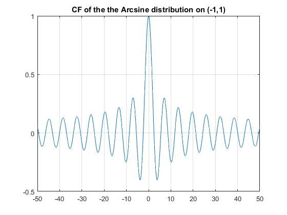 I.1.b EXAMPLE: PDF/CDF of the symmetric Arcsine distribution on (-1,1)
cf = @(t) cfS_Arcsine(t);
x = linspace(-1,1,501);
xRange = 2;
clear options
options.N = 2^12;
options.dt = 2*pi/xRange;
result = cf2DistGP(cf,x,[],options);
disp(result)
x: [1×501 double]
cdf: [1×501 double]
pdf: [1×501 double]
prob: []
qf: []
SixSigmaRule: 6
N: 4096
dt: 3.1416
T: 1.2868e+04
PrecisionCrit: 1.9325e-07
myPrecisionCrit: 1.0000e-12
isPrecisionOK: 0
xMean: 0
xStd: 0.7071
xMin: -Inf
xMax: Inf
cf: @(t)cfS_Arcsine(t)
const: -5.5890e-16
isCompound: 0
isCircular: 0
details: [1×1 struct]
options: [1×1 struct]
tictoc: 0.0468
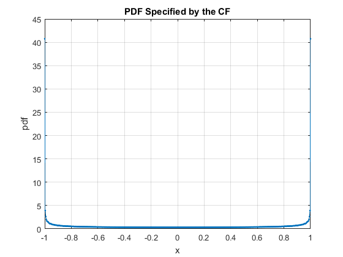 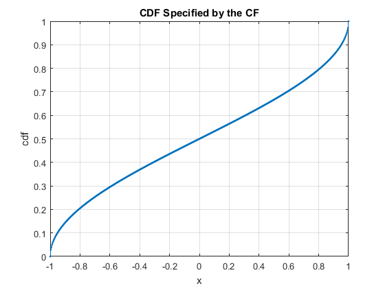 GAUSSIAN (STANDARD NORMAL) DISTIBUTION
cfS_Gaussian(t) evaluates the characteristic function cf(t) of the symmetric zero-mean standard Gaussian distribution (i.e. the standard normal distribution with zero mean and unit variance: N(0,1)), i.e.
cf(t) = cfS_Gaussian(t) = exp(-t^2/2)
For more details see WIKIPEDIA: https://en.wikipedia.org/wiki/Normal_distribution
SYNTAX:
cf = cfS_Gaussian(t)
I.2.a EXAMPLE: CF of the Gaussian distribution N(0,1)
t = linspace(-5,5,501);
cf = cfS_Gaussian(t);
figure; plot(t,cf),grid
title('CF of the Gaussian distribution N(0,1)')
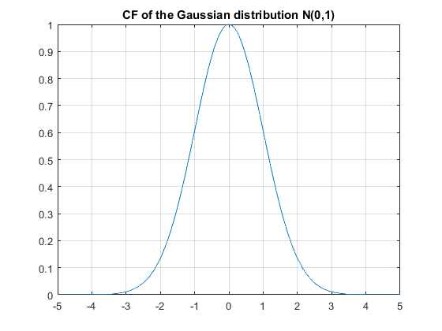 I.2.b EXAMPLE: PDF/CDF of the Gaussian distribution N(0,1)
cf = @(t) cfS_Gaussian(t);
x = linspace(-4,4,101);
clear options
options.N = 2^5;
options.SixSigmaRule = 8;
result = cf2DistGP(cf,x,[],options);
disp(result)
x: [1×101 double]
cdf: [1×101 double]
pdf: [1×101 double]
prob: []
qf: []
SixSigmaRule: 8
N: 32
dt: 0.3927
T: 12.5664
PrecisionCrit: 2.0382e-36
myPrecisionCrit: 1.0000e-12
isPrecisionOK: 1
xMean: 0
xStd: 1.0000
xMin: -8.0000
xMax: 8.0000
cf: @(t)cfS_Gaussian(t)
const: 0
isCompound: 0
isCircular: 0
details: [1×1 struct]
options: [1×1 struct]
tictoc: 0.0042
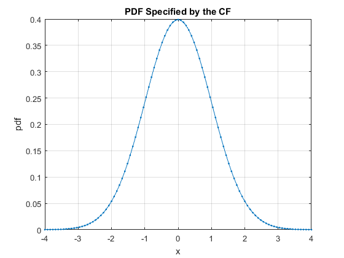 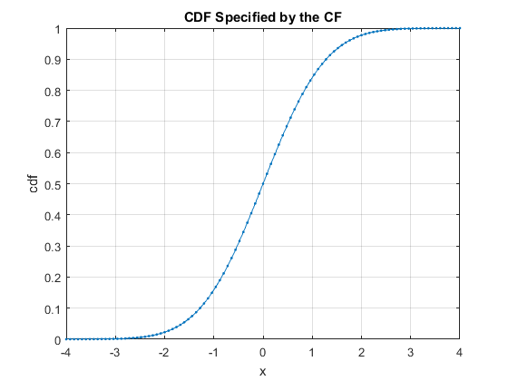 RECTANGULAR DISTRIBUTION
cfS_Rectangular(t) evaluates the characteristic function cf(t) of the symmetric zero-mean Rectangular distribution on the interval (-1,1)(rectangular distribution with zero mean and variance 1/3), i.e.
cf(t) = cfS_Rectangular(t) = sinc(t) = sin(t)/t;
For more details see WIKIPEDIA: https://en.wikipedia.org/wiki/Uniform_distribution_(continuous)
SYNTAX:
cf = cfS_Rectangular(t)
I.3.a EXAMPLE: CF of the Rectangular distribution on (-1,1)
t = linspace(-50,50,501);
cf = cfS_Rectangular(t);
figure; plot(t,cf),grid
title('CF of the the Rectangular distribution on (-1,1)')
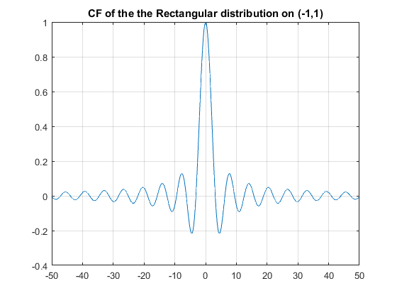 I.3.b EXAMPLE: PDF/CDF of the the Rectangular distribution on (-1,1)
cf = @(t) cfS_Rectangular(t);
x = linspace(-2,2,101);
xRange = 2;
clear options
options.N = 2^5;
options.dt = 2*pi/xRange;
result = cf2DistGP(cf,x,[],options);
disp(result)
x: [1×101 double]
cdf: [1×101 double]
pdf: [1×101 double]
prob: []
qf: []
SixSigmaRule: 6
N: 32
dt: 3.1416
T: 100.5310
PrecisionCrit: 1.9388e-19
myPrecisionCrit: 1.0000e-12
isPrecisionOK: 1
xMean: 0
xStd: 0.5774
xMin: -Inf
xMax: Inf
cf: @(t)cfS_Rectangular(t)
const: 9.3315e-33
isCompound: 0
isCircular: 0
details: [1×1 struct]
options: [1×1 struct]
tictoc: 0.0040
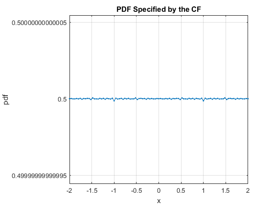 
STUDENT T DISTRIBUTION
cfS_StudentT(t,df) evaluates the characteristic function cf(t) of the Student's t-distribution with the parameter df (degrees of freedom, df>=1) computed for real vector argument t, i.e.
cf(t) = cfS_StudentT(t,df) = besselk(df/2,abs(t)*sqrt(df),1) * exp(-abs(t)*sqrt(df)) * ... (sqrt(df)*abs(t))^(df/2) / 2^(df/2-1)/gamma(df/2);
For more details see WIKIPEDIA: https://en.wikipedia.org/wiki/Student%27s_t-distribution
SYNTAX: cf = cfS_StudentT(t,df)
I.4.a EXAMPLE: CF of the Student t-distribution, df = 3
df = 3;
t = linspace(-5,5,501);
cf = cfS_StudentT(t,df);
figure; plot(t,cf),grid
title('CF of the Student t-distribution with df = 3')
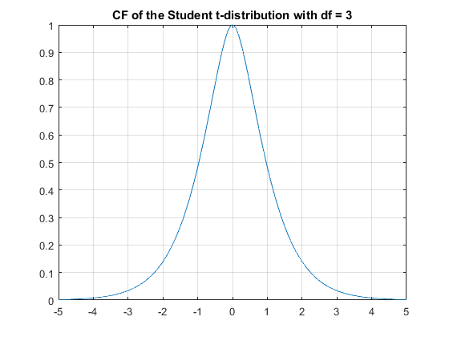 I.4.b EXAMPLE: PDF/CDF of the Student t-distribution, df = 3
df = 3;
cf = @(t) cfS_StudentT(t,df);
x = linspace(-8,8,101);
clear options
options.SixSigmaRule = 8;
result = cf2DistGP(cf,x,[],options);
disp(result)
x: [1×101 double]
cdf: [1×101 double]
pdf: [1×101 double]
prob: []
qf: []
SixSigmaRule: 8
N: 1024
dt: 0.2267
T: 232.1812
PrecisionCrit: 1.9375e-175
myPrecisionCrit: 1.0000e-12
isPrecisionOK: 1
xMean: 0
xStd: 1.7319
xMin: -13.8555
xMax: 13.8555
cf: @(t)cfS_StudentT(t,df)
const: 0
isCompound: 0
isCircular: 0
details: [1×1 struct]
options: [1×1 struct]
tictoc: 0.0194
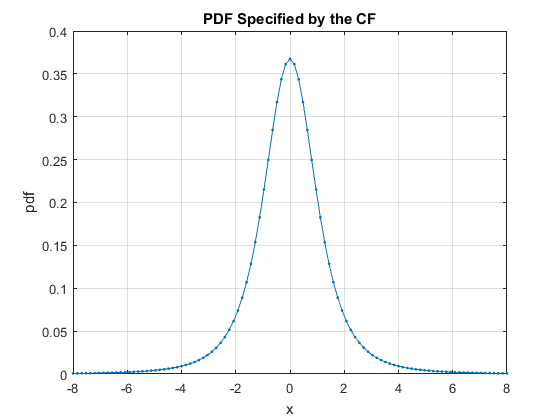 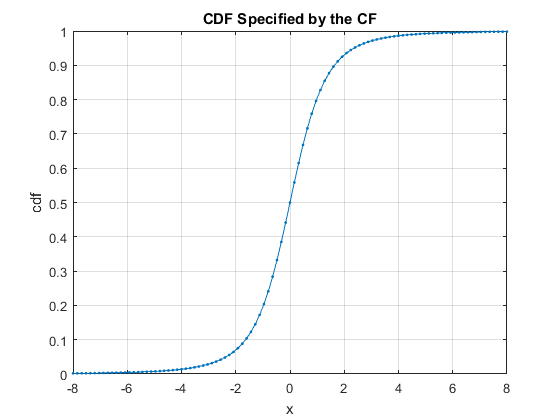 TRAPEZOIDAL DISTRIBUTION
cfS_Trapezoidal(t,lambda) evaluates the characteristic function cf(t) of the symmetric zero-mean Trapezoidal distribution on the interval (-1,1) with halfwidth of the constant pdf region given by the parameter lambda (offset, 0<=lambda<=1),i.e., it is symmetric trapezoidal distribution with zero mean and variance V = (1+lambda^2)/6, i.e.
cf(t) = cfS_Trapezoidal(t) = cfX_Rectangular(w*t))*cfX_Rectangular((1-w)*t); = (sin(w*t)./(w*t)).*(sin((1-w)*t)./((1-w)*t)) where w = (1+lambda)/2. For more details see WIKIPEDIA: https://en.wikipedia.org/wiki/Triangular_distribution
SYNTAX:
cf = cfS_Trapezoidal(t,lambda)
I.5.a EXAMPLE: CF of the symmetric Trapezoidal distribution, lambda = 0.5
lambda = 0.5;
t = linspace(-50,50,501);
cf = cfS_Trapezoidal(t,lambda);
figure; plot(t,cf),grid
title('CF of the symmetric Trapezoidal distribution with lambda = 0.5')
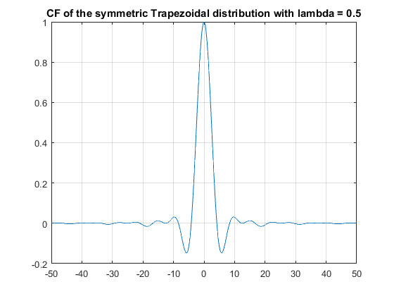 I.5.b EXAMPLE: PDF/CDF of the symmetric Trapezoidal distribution, lambda = 0.5
lambda = 0.5;
cf = @(t) cfS_Trapezoidal(t,lambda);
x = linspace(-1,1,101);
xRange = 2;
clear options
options.N = 2^10;
options.dt = 2*pi/xRange;
result = cf2DistGP(cf,x,[],options);
disp(result)
x: [1×101 double]
cdf: [1×101 double]
pdf: [1×101 double]
prob: []
qf: []
SixSigmaRule: 6
N: 1024
dt: 3.1416
T: 3.2170e+03
PrecisionCrit: 2.3618e-37
myPrecisionCrit: 1.0000e-12
isPrecisionOK: 1
xMean: 0
xStd: 0.4564
xMin: -Inf
xMax: Inf
cf: @(t)cfS_Trapezoidal(t,lambda)
const: -2.7273e-60
isCompound: 0
isCircular: 0
details: [1×1 struct]
options: [1×1 struct]
tictoc: 0.0080
 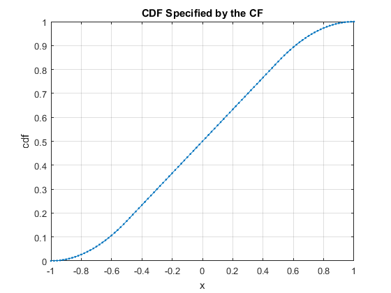
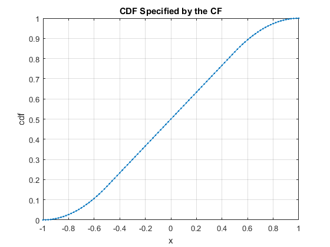 TRIANGULAR DISTRIBUTION
cfS_Triangular(t) evaluates the characteristic function cf(t) of the symmetric zero-mean Triangular distribution on the interval (-1,1)(symmetric triangular distribution with zero mean and variance 1/6), i.e.
cf(t) = cfS_Triangular(t) = (2-2*cos(t))/t^2
% For more details see WIKIPEDIA: % <https://en.wikipedia.org/wiki/Triangular_distribution> % % SYNTAX: % % |cf = cfS_Triangular(t)|
I.6.a EXAMPLE: CF of the symmetric Triangular distribution on (-1,1)
t = linspace(-50,50,501);
cf = cfS_Triangular(t);
figure; plot(t,cf),grid
title('CF of the the symmetric Triangular distribution on (-1,1)')
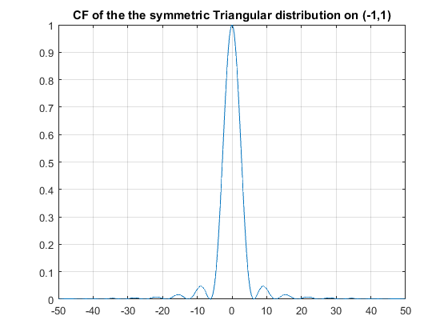 I.6.b EXAMPLE: PDF/CDF of the the symmetric Triangular distribution on (-1,1)
cf = @(t) cfS_Triangular(t);
x = linspace(-1,1,101);
xRange = 2;
clear options
options.N = 2^5;
options.dt = 2*pi/xRange;
result = cf2DistGP(cf,x,[],options);
disp(result)
x: [1×101 double]
cdf: [1×101 double]
pdf: [1×101 double]
prob: []
qf: []
SixSigmaRule: 6
N: 32
dt: 3.1416
T: 100.5310
PrecisionCrit: 0
myPrecisionCrit: 1.0000e-12
isPrecisionOK: 1
xMean: 0
xStd: 0.7096
xMin: -Inf
xMax: Inf
cf: @(t)cfS_Triangular(t)
const: 3.9999e-60
isCompound: 0
isCircular: 0
details: [1×1 struct]
options: [1×1 struct]
tictoc: 0.0033
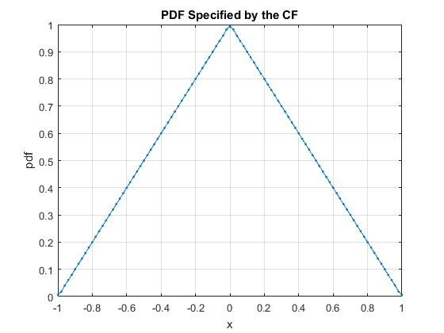 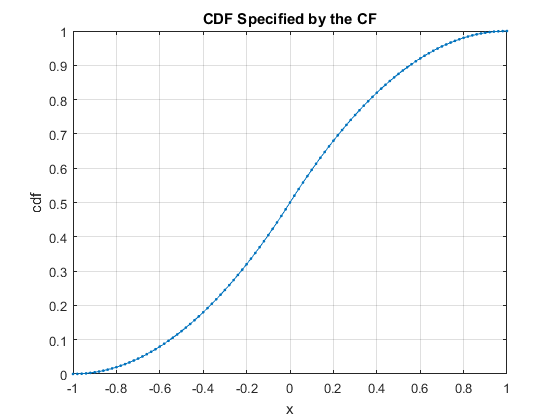